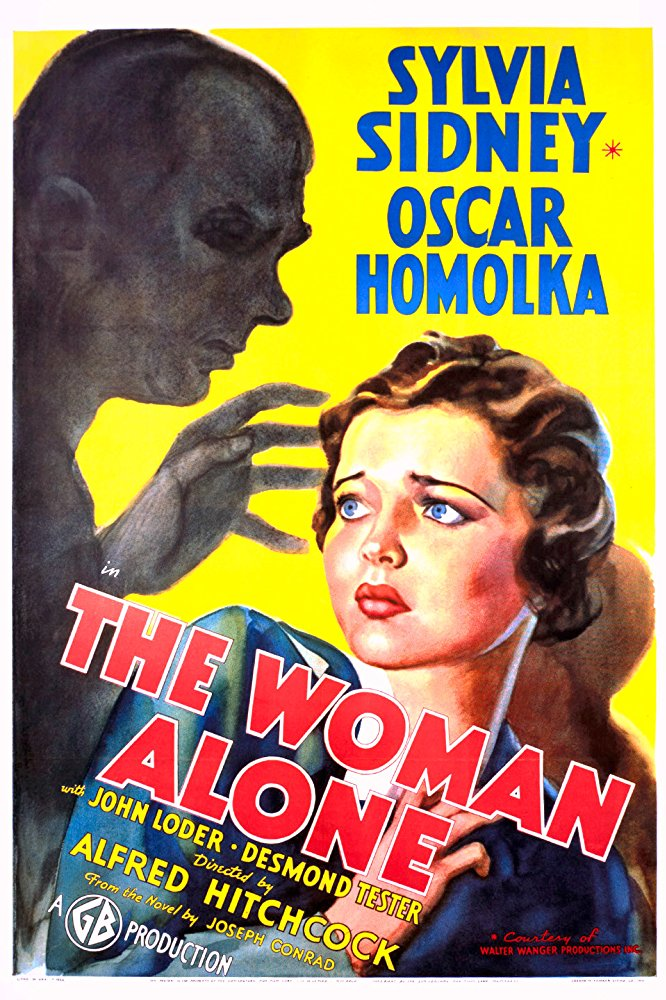
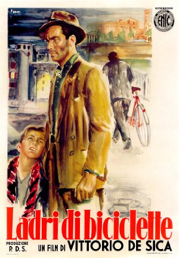
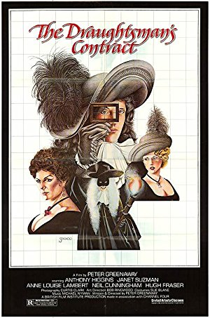

Season 46 (2011-2012)
-
 September 11, 2011Directed by James Marsh; Starring Philippe Petit, Jean François Heckel, Jean-Louis Blondeau, Annie Allix
September 11, 2011Directed by James Marsh; Starring Philippe Petit, Jean François Heckel, Jean-Louis Blondeau, Annie Allix
Man on Wire
UK/USA, 2008, 94 min, Color/B&W, PG-13
In 1974 tightrope walker Phillipe Petit and his cohorts masterminded a crime of international renown when they realized Petit's dream of performing a tightrope routine on a line strung between the Twin Towers of the World Trade Center. This engaging film details the planning and execution of the "artistic crime", recalling a more innocent time and honoring the memory of the Twin Towers as they existed before September 11, 2001. This film won the 2009 Academy Award for Best Documentary Feature.
Film Notes (David Lagos): On August 7, 1974, an impish Frenchman named Philippe Petit performed a 45-minute piece of guerilla performance art in the middle of Manhattan – walking a tightrope 1,350 feet above the ground between the two unfinished towers of the World Trade Center. Thirty-four years later, director James Marsh honored his bravura act by recounting the seven-year story behind the walk in a documentary based on Petit's 2002 memoir To Reach the Clouds. The result, Man on Wire, is an understated masterpiece of the form. It has the feel of a great caper film with a colorful cast of characters, none more enthralling than Petit himself, whose participation in Marsh's project is what gives this obviously freighted subject a disarming buoyancy and elan. A true artiste with an ego to match, Petit can be utterly charming and completely insufferable but is the perfect raconteur of his own epic tale.
By focusing on the back-story of the walk, Marsh allows us to live among Petit's merry band of co-conspirators and to get a sense for their worldview. A ringleader nonpareil, Petit somehow whips a motley hash of countercultural misfits into a workable team, all the while preserving his air of anarchic mischief. Indeed, one of the many emotions evoked by Man on Wire is regret for our lost sense of play. Watching these plotters breach the lax security around the WTC construction site, it seems inconceivable that such a "heist" could be pulled off today – or that it would be met with anything other than grim condemnation. And while a part of our selves circa 2011 might be tempted to condemn, the film reveals to us a Philippe Petit who was no mere hippie prankster but a true genius with a monk-like devotion to his craft. His great triumph, set against the elegiac period footage of the New York skyline, will stay with you. Among its countless honors, Man on Wire earned both the Audience Award and the Grand Jury Award for Best World Cinema Documentary at the Sundance Film Festival in 2008. We can think of no better way to open the 2011-12 season of The Cinema, Inc. -
 October 9, 2011Directed by Michael Haneke; Starring Daniel Auteuil, Juliette Binoche, Maurice Bénichou, Annie Girardot
October 9, 2011Directed by Michael Haneke; Starring Daniel Auteuil, Juliette Binoche, Maurice Bénichou, Annie Girardot
Hidden (Caché)
France, 2005, 117 min, Color, R, French w/subtitles
Michael Haneke's Caché (Hidden) taps into our primordial fear that we are being watched. When bourgeois couple Georges (Daniel Auteuil) and Anne (Juliette Binoche) begin receiving anonymous videotapes of their house and phone calls from strangers asking for Georges, the two begin to question their safety, and their pasts. As the tension builds, Anne comes to believe that Georges is harboring a secret. Directed with Hitchcock-like precision, Haneke presents a mystery with enough camera tricks and tension to keep you thinking about it long after the infamous final shot has faded.
Film Notes (Jackson Cooper): "It's the same with [Caché] – if 300 people are in a cinema watching it, they will all see a different film, so in a way there are thousands of different versions of Caché." ~Michael Haneke
You're walking down the street. You're late to a meeting. A stranger stops you and says, "Your house is being watched." He walks away. What do you do? How do you feel?
This is a scenario similar to the one in Michael Haneke's utterly disturbing thriller Caché, starring Juliette Binoche and Daniel Auteuil as a bourgeois French couple. Their lives are perfect: they are both professional, respectable people with friends, a son, and plenty of money. Then again, this is cinema, so nothing is perfect.
It begins when they starting receiving anonymous videotapes on their doorstep of their house being recorded from a camera placed across the street from where they live. The tapes reveal that they pass the camera every morning, unaware of its existence. When they go to investigate, they find nothing.
Soon, disturbing childlike pictures begin to accompany the videotapes; the phone rings, they answer and no one is there. Amidst this paranoia, secrets from the past begin to come up and it seems that no one can really be trusted.
This film, which I hold in high regard as one of the most fascinating and deeply disturbing films of all time, is a pinnacle achievement for many reasons. One such is that it provides us the viewer with insightful commentary on post-9/11 anxieties.
Post-9/11 cinema has become a topic of interest for film critics and scholars because films made in the decade after 9/11 reflected a radical change in America. Many films focused on terrorism as the enemy (Babel) and even terrorist attacks (Munich) to show our growing xenophobia of other countries. Even such a film as Transformers takes the idea of Americans fighting terrorism to the next level. Films such as Cloverfield and Haneke's own remake of Funny Games depicted the horrors of outside "invaders" terrorizing normal, white-bread citizens.
Caché, while it is set in France and often alludes to the French-Algerian War, can be viewed as showing post-9/11 fears. Someone you do not know is videotaping your house. This may be cause for alarm if you were to tell someone that. Much like the villains in The Strangers did not initially terrorize but wait in the shadows, watching the couple go about their routine activities. It is a disturbing concept if you were to be told someone was watching you and your family.
Now onto the main reason for these film notes.
I have seen Caché over ten times but will never forget the first time I saw it, and how confused I was. What was happening? What did all of this mean? Is there symbolism? Much like watching Mulholland Drive for the umpteenth time, it helps to have "clues" as to decoding Caché's Vertigo-like puzzle.
I would like to provide you now with a Caché survival guide.
1. Caché exists in a universe of sight and mind and sound. There is no music in Caché and the majority of the film is visual. However, be sure to listen to conversations, taking in not only what they say, but how they say it. Oh, and don't ignore newscasts.
2. Point-Of-View is deceiving. Take this excerpt from an article on the film : "Most troublingly of all, Haneke shows us vital scenes from the point-of-view of this blank, affectless video-avenger; he invites us to share his destructive gaze. It is a casual critical truism when talking about voyeurism in the movies – discussing, say, Michael Powell's Peeping Tom - to say that it implicates the viewer. Until now, I have always felt like replying: speak for yourself, mate. Yet this really does implicate you. You feel like you too are participating in this terrible, remorseless destruction." ~Peter Bradshaw
3. Patience is a virtue. The genius of Caché is that there are long, drawn out moments where nothing seems to happen, yet, there is a foreboding feeling of macabre hanging over the scenes. Be patient.
4. Caché is about denial and guilt.
5. Final Act. *This is especially important in regard to the final scene.* It took my mother and me, when we viewed this movie for the first time, two rewinds to figure out what was so special about the last scene. And one thing stood out. The scene is a mosaic; like the pages of an I-Spy book, it is very difficult to find what you're looking for on the first try. This is where Haneke tricks us. Without giving much away, I can tell you not to look where your eyes want you to. Haneke places MacGuffins around this scene to trick where your eyes go. But if you look close enough, you may be able to find the solution to the mystery that is Caché.
Caché is such a brilliant film. If you are like me, and at the end of the film, the movie's images are burned into your mind, check out Roger Ebert's analysis of the film (link below). Ebert himself is fascinated by this film, and rightfully so.
The film premiered at Cannes in 2005, winning Haneke a prize for Best Director. It was listed first in The Times "Best 100 Films of the Decade", 44th in the Daily Telegraph's equivalent list, and 36th in The Guardian's.
Among many of Caché's admirers is director Martin Scorsese, who plans on remaking Caché with muse Leonardo DeCaprio. What an adventure that would be, indeed.Read Roger Ebert's review of Hidden at Great Movies. -
 November 13, 2011Directed by Michael Powell, Emeric Pressburger; Starring Deborah Kerr, Kathleen Byron, David Farrar, Jean Simmons, Sabu
November 13, 2011Directed by Michael Powell, Emeric Pressburger; Starring Deborah Kerr, Kathleen Byron, David Farrar, Jean Simmons, Sabu
Black Narcissus
UK, 1947, 101 min, Color, Not Rated
Anglican nuns attempt to establish a convent at the edge a sheer cliff in the Himalayas. Extreme conditions cause them to question their commitment to their task as they confront their demons in an extremely repressive atmosphere. Shangi-La run amok in a brilliant blaze of Technicolor, under the helm of director Michael Powell (The Red Shoes). Black Narcissus won Oscars for Best Cinematography and Best Art Direction in 1948.
Film Notes (Karen Bender): Is anyone capable of expressing repressed sexuality as well as Deborah Kerr? I would say that until she broke out of this typecast mold by rolling around in the waves with Burt Lancaster in From Here to Eternity, no one actress besides Deborah Kerr epitomized the figure of the repressed female quite as well as she did, although co-star Kathleen Byron does give her a run for her money in this feature.
The story line of Black Narcissus reads like the dark side of James Hilton's Lost Horizon and his legend of Shangri-La. A group of Anglican nuns is stationed at an abandoned monastery that is built at the edge of a sheer cliff in a remote Himalayan village. Far from finding themselves living and thriving in a utopia, the nuns lead an insular existence, one which lends some of them to reflection and others to a sense of complete isolation from the world and, in some cases, from reality. Their existence is teetering on the brink of destruction, both literally and figuratively. Naturally, tensions and isolation merge into a lethal concoction and bring these unwitting people into a collision course with disaster as the potentially tragic story unfolds.
Yet, for me, the spectacularly understated performance of Deborah Kerr and the showier performance by Kathleen Byron are not what make this feature so memorable. It is the combined contribution of legendary cinematographer Jack Cardiff and Production Designer Alfred Junge that takes this film from a melodrama to a masterpiece.
Cardiff's color palette is otherworldly and to say that it is vivid is to entirely understate the case. A Technicolor executive later stated that Black Narcissus was the premier example of Technicolor cinematography – ever. Alfred Junge was the mastermind who created the Himalayan scenery, allowing Cardiff to create the sensation of dizzying heights, plunging depths, and rarified air – all within the confines of the studio. Early in the process of making the film, director Michael Powell determined that actual location shots would have been so overpowering that they would have been a distraction from the acting. To keep this from happening, Junge used glass shots and hanging miniatures to create the sense of space that is photographed so realistically in the film. The backdrops were blown-up black and white photographs that were hand colored by the art department and captured in glorious Technicolor by Cardiff's camera.
In fact, the Academy of Motion Picture Arts and Sciences awarded Jack Cardiff with the Academy Award for Cinematography for Black Narcissus. Michael Powell and Jack Cardiff teamed again in 1948's The Red Shoes, and Cardiff went on to more great films, including The African Queen in 1950. The Academy likewise recognized Alfred Junge's achievement by awarding him with the Academy Award for Art Direction for this film. And oh yes, not to be overlooked, Ms. Deborah Kerr took home the New York Film Critics Award for Best Actress for this film, an award that preceded her six Oscar nominations, four BAFTA nominations, and one Emmy nomination and her starring roles in From Here to Eternity, The King and I and An Affair to Remember.
So, enjoy your trip to the Himalayas – and watch out for that last step. It's a doozy. -
 December 11, 2011Directed by Charles Chaplin; Starring Charles Chaplin, Mack Swain, Tom Murray, Georgia Hale
December 11, 2011Directed by Charles Chaplin; Starring Charles Chaplin, Mack Swain, Tom Murray, Georgia Hale
The Gold Rush
USA, 1925, 95 min, B&W, Not Rated, Silent w/intertitles
The well-loved Chaplin classic stars Charlie as "The Lone Prospector" and features the legendary Dance of the Dinner Rolls as Charlie manages to triumph over extreme elements, starvation and unrequited love. This version appears with a voice-over narration added by Chaplin himself in a subsequent release.
Film Notes (Karen Bender): The term "Renaissance Man" describes a person who is well educated or who excels in a wide variety of subjects or fields. The prototype for such a person is Leonardo da Vinci, the original "Renaissance Man" who excelled in so many fields that they felt obliged to invent this term to describe him. Charles Spencer Chaplin, director and star of this month's film, might easily be another.
Charlie Chaplin was already a worldwide phenomenon when he wrote, directed, and starred in The Gold Rush. In addition to the aforementioned roles that he filled in this film, Chaplin wrote the musical score for this 1942 reissued version in which he also provided the voice-over that replaced the title cards from the 1925 version. His talent was massive and his perfectionism was legendary. Chaplin possessed an expressive face, a supple physique, and he played the cello quite well.
The Gold Rush is said to be one of Chaplin's least-improvised scripts, as he had worked on the idea for years prior to committing it to film. Chaplin initially conceived it as a means of conveying a supremely dark and tragic story, such as the cannibalistic tale of the doomed Donner party, in a comic fashion. By combining the Donner story line with the strike-it-rich tales of the Klondike Gold Rush, Chaplin effectively merged both story lines and a hit film resulted. Throughout the rest of his life, Chaplin repeatedly asserted that The Gold Rush was the film for which he would like to be remembered.
Here's the scenario: The Little Tramp (Chaplin) finds himself in the midst of the Gold Rush in the Klondike. Bad weather strands him in a remote cabin with a prospector (Mack Swain), who has found a large gold deposit, and an escaped fugitive (Tom Murray). They barely survive starvation, after which they part ways, with the prospector and the fugitive fighting over the prospector's claim, ending with the prospector receiving a blow to the head and the fugitive falling off a cliff to his death. The Tramp eventually finds himself in a gold rush town where he ultimately decides to give up prospecting and falls in love with a lonely saloon girl (Georgia Hale) whom he mistakenly thinks has fallen in love with him. He soon finds himself waylaid by the prospector he met earlier, who has developed amnesia and needs the Tramp to help him find his claim by leading him to the cabin.
The Gold Rush was a huge success in the US and worldwide. It is the fifth-highest grossing silent film in cinema history, taking in more than $4,250,001 at the box office in 1926, and the highest grossing silent comedy. Although it was truly a silent film, this re-released 1942 sound version of The Gold Rush received an Academy Award nomination for Best Sound Recording. Featuring the Dance of the Dinner Rolls and the shoe-eating sequences, we feel certain that you will strike it rich with this big-screen viewing of a timeless film treasure. -

January 8, 2012Directed by Alfred Hitchcock; Starring Sylvia Sidney, Oskar Homolka, Desmond Tester
Sabotage
UK, 1936, 76 min, B&W, Not Rated
Based on the Joseph Conrad novel The Secret Agent, this 1936 thriller is not to be confused with Hitchcock's other 1936 film Secret Agent, or his 1942 film Saboteur. A man and his wife operate a small cinema in London. Unbeknownst to the wife and her teenaged brother, the husband is part of a gang of foreign saboteurs being hunted by Scotland Yard. Sabotage was produced in England and contains a sequence that Hitchcock later said that he regretted as too distasteful for the audience.
Film Notes (Karen Bender): It's an otherwise uneventful afternoon. A crowded double-decker bus trundles down a busy London street. Stopping, starting, passengers boarding and disembarking. An elderly woman, a young boy, and a dog enjoy the ride, blissfully unaware that there is an improvised explosive device onboard the bus. Disaster lurks at every corner that the bus turns, and no one has any idea that the hand of a terrorist could at any moment alter their lives.
This sounds like a story from today's sensational headlines of terrorism being visited upon Western Europe. In reality, this is part of the story line of this month's feature, Alfred Hitchcock's 1936 film Sabotage. In England during the 1920s and 1930s, sabotage was viewed as a clear and present danger by the MI5, the British version of the CIA. The British people were still reeling from the shock of the Soviet overthrow of the Russian monarchy, much as the shadows of 9/11 still haunt our own collective nightmares. To this heady mix, add the not-very-distant memories of the horrors of trench warfare in WWI to the depths of the worldwide depression of the 1930s, and you have a paranoid public, wearily viewing the rise of the Third Reich with a twitching, jaundiced eye. There is a very real fear that the natural order of things could easily break down, without warning and irrevocably.
Alfred Hitchcock eagerly explored this epidemic of fear by translating such books as Buchan's The Thirty-Nine Steps and Conrad's Secret Agent, the novel upon which this month's feature was based, into successful motion pictures. Sabotage revolves around a German plot to destroy London. An undercover detective is dispatched to survey the situation and disastrous complications occur when his cover is blown and the plot begins to unravel. 1930s audiences would have accepted this "MacGuffin" without question. It was part of the fabric of their lives at the time.
Sabotage is a less frequently viewed Hitchcock gem that incorporates several Hitchcockian mechanisms. Rapid cuts, oblique filming angles, close-ups on facial expressions, wordless sequences – all play a part here. This film also quite successfully exploits the concept of the theatre as a vehicle for bedlam, a device that Hitchcock employed in several films, including The 39 Steps, Torn Curtain, The Man Who Knew Too Much (both American and English versions), and Stage Fright, to name a few. The theme of cinematic depictions of violence stepping out of the realm of film and into reality is also explored here, a plot device that has since been replicated untold times, and was exploited by Quentin Tarantino in his 2009 film Inglourious Basterds.
In retrospect, Alfred Hitchcock said that Sabotage contained the most cold-blooded sequence that he ever filmed, and that he would never again subject an audience to that level of unremitted cruelty. At least not without a sly joke to break up the tension. This month's feature does not contain gratuitous violence, crude language, or frank depictions of sexuality, but it will still have you squirming in your seat from time to time. We promise. -
 February 12, 2012Directed by Josef von Sternberg; Starring Emil Jannings, Marlene Dietrich, Kurt Gerron, Rosa Valetti
February 12, 2012Directed by Josef von Sternberg; Starring Emil Jannings, Marlene Dietrich, Kurt Gerron, Rosa Valetti
The Blue Angel
Germany, 1930, 106 min, B&W, Not Rated, German w/subtitles
Concerned by his students' fascination with a sultry night club singer, a professor (Emil Jannings) sets out to investigate, becomes seduced by the fascinating Lola (Marlena Dietrich), and causes his own eventual destruction. Featuring Dietrich's iconic performance of "Falling in Love Again," this is a prime example of German Expressionism at its best.
Film Notes (Toni Meyer): The Blue Angel is a film about a Professor, Immanuel Rath (Emil Jennings), who leaves his natural habitat for the love of a woman who is not of his class, falling into a chaotic world he does not understand. In abandoning the "pigeonhole" that society has placed him in to try to possess a compelling force of nature, Lola-Lola (Marlene Dietrich), he loses everything – career, power, home, social standing, self-respect, and is finally destroyed by the choices he has made.
When the film opens, Professor Rath is a strict and humorless schoolmaster who is shocked when he discovers the boys in his class have been spending their time at a sleazy cabaret called The Blue Angel, where an entertainer named Lola keeps the men in thrall and sells suggestive postcards of herself. Rath goes to the club in hopes of catching his students and giving them a severe dressing-down, but he instead finds himself entranced by the carefree atmosphere of the club, and is struck by Lola's earthy, sensual beauty. Rath finds himself strongly attracted to Lola, and she later entertains him in her dressing room. When word of Rath's infatuation with Lola spreads to his students, he is taunted mercilessly, and eventually Rath is dismissed from the school. Although Lola agrees to marry Rath, she shows little affection for him and delights in humiliating him, making him her servant and forcing him to play a clown in her stage show.
The Blue Angel was shot in both German and English language versions and Dietrich introduced what became her theme song, Friedrich Hollaender's "Falling in Love Again (Can't Help It)". The film is considered to be the first major German sound film and it brought world fame to Dietrich. -
 March 11, 2012Directed by Serge Bromberg, Ruxandra Medrea; Starring Romy Schneider, Bérénice Bejo, Serge Reggiani, Jacques Gamblin
March 11, 2012Directed by Serge Bromberg, Ruxandra Medrea; Starring Romy Schneider, Bérénice Bejo, Serge Reggiani, Jacques Gamblin
Inferno (L'enfer d'Henri-Georges Clouzot)
France, 2009, 102 min, Color, Not Rated, French w/subtitles
In 1964 French director Henri-Georges Clouzot (The Wages of Fear, Diabolique) embarked on his most ambitious film to date: L'Enfer. After a frenetic 18 days of shooting he suffered a heart attack, and the production was shut down. More than 40 years later, film archivist Serge Bromberg discovered 185 cans of footage and pre-production tests from L'Enfer and set out to tell the story of Clouzot's unfinished masterwork. Combining interviews with surviving members of the cast and crew with clips of the actual film, Bromberg offers a glimpse into one of cinema's legendary ill-fated productions.
Film Notes (Pete Corson): Henri-Georges Clouzot (August 18, 1907 – January 12, 1977) was one of France's greatest film directors, with Diabolique (1955) and The Wages of Fear (1953) to his credit when he began work on L'Infer in 1964. The film was never completed, but Serge Bromberg and Ruxandra Medrea have constructed a fascinating documentary on the shooting of the film. This is the story of a bizarre project that was doomed to failure from the beginning.
You could argue that Clouzot was a Gallic Hitchcock, darker and more intense, and that if things had worked out right, 1964's Inferno might have been his Vertigo — a mature masterpiece.
Instead, the film gave its maker a breakdown and a heart attack. The director of this new documentary – part history, part restoration, all fascinating – is Serge Bromberg, who got hooked when he was stuck in a stalled elevator with a woman who turned out to be Clouzot's widow. She led him to 185 cans of film, remnants of a movie that might have changed the history of cinema.
That sounds like hyperbole until you see the test footage shot by Clouzot and his crew. Inferno was to tell the story of Marcel (Serge Reggiani), a newly-married man consumed with pathological jealousy toward his wife, Odette (Romy Schneider). While the "real-life" scenes were filmed in black and white, Clouzot shot Marcel's inner fantasies in hothouse Technicolor and subjected them to tonal filters, prismatic lenses, swirling lighting schemes – an entire gamut of visual distortions that owed much to then-new movements like Op Art and kinetic art. Even the soundtrack was manipulated via editing and psycho-acoustic music techniques to reflect the hero's fraying mental state.
The results are like nothing you've seen before: Clouzot seemed to be reinventing the medium itself. During pre-production, a group of Hollywood studio executives from Columbia Pictures turned up, looked at the tests, and gave the director unlimited financial backing. That freedom may have ultimately doomed his creative project. When the time came to actually shoot Inferno, Clouzot overloaded the production with three separate camera teams and obsessively reshot the same scenes over and over until Reggiani quit and the crew mutinied. After three weeks, the production was shut down due to cost overruns and the heart attack of Clouzot. This documentary is a tantalizing glimpse of a highly creative and experimental filmmaker at work. -
 April 8, 2012Directed by Nathaniel Kahn; Starring Edmund Bacon, Edwina Pattison Daniels, Balkrishna Doshi, Frank Gehry
April 8, 2012Directed by Nathaniel Kahn; Starring Edmund Bacon, Edwina Pattison Daniels, Balkrishna Doshi, Frank Gehry
My Architect: A Son's Journey
USA, 2003, 116 min, Color, Not Rated
My Architect is filmmaker Nathaniel Kahn's inquiry into the life and work of his father, renowned architect Louis Kahn. Through interviews with Frank Gehry, I.M. Pei, and his own mother and two half-sisters, the filmmaker tries to reconcile his father's achievements with his profound personal failings. He also travels the globe to view his father's legacy – the buildings he designed throughout the world.
Film Notes (Gerry Folden): It is said the advancement of civilization is punctuated by the advancement of architecture's ability to span a space, e.g. post and lintel, the arch, the vault, the dome, the truss beam, tension and suspension structures.
Good architecture is to the plastic arts what opera is to the performing arts. Opera embraces all the stagecraft of theatre plus the talents of a symphony's musicians, a ballet's dancers, and, of course, the vocal artists themselves. Architecture involves form with function, advanced engineering with the artful use of materials, an aesthetic exploitation of light with textures on the space within and the landscape without.
Great architecture becomes iconic of its time and place, e.g. the Parthenon, Saint Peter's, Notre Dame, the Chrysler Building, and the Sydney Opera. (When your Cinema, Inc. Board of Directors selected the films in December 2010 for this season – our 46th – we had no way of knowing that the Triangle chapter of the American Institute of Architects' North Carolina branch would within a month break ground on Peace Street for the construction of what just last month was voted Raleigh's ugliest building.)
Louis Kahn may be the one great American architect least likely to be listed along with such giants as Louis Sullivan, Frank Lloyd Wright, Philip Johnson, and Frank Gehry. There are three reasons for this oversight: he died unexpectedly with many domestic works undone, his most noteworthy projects were done abroad, and his lasting influence was in large measure the result of his many years as an educator at Yale and the University of Pennsylvania.
Born in Estonia 111 years ago, he immigrated to Philadelphia with his family when he was five. His graphic art talents were redirected when he took a compulsory high school course on architecture. After receiving a Bachelor of Architecture degree and working for the city of Philadelphia, he traveled to Europe where he was influenced by medieval walled cities and castles. This shows itself in the monumental scope of his greatest achievements, a bold break from the dominant glass boxes of the International Style making Kahn the American founding father of the oddly named Brutalism movement, an elegant reinterpretation of ancient ruins made best known by the works of France's Le Corbusier.
Kahn's death by heart attack in the men's room of New York's Penn Station in 1974 made public the fact that he in fact had three families… three children by three women only one of which was his wife by a marriage in 1930. Nathaniel was his only son, the child of his last 'affair.' Only eleven when his father died, he had far too few memories of his father to define himself as the son of a great man. In place of a photo album, Nathaniel had his father's projects to flesh out his understanding of the man he barely knew. He traveled the world to find his father's students, colleagues, and contemporaries; to explore his father's works; and to meet his half-sisters and their mothers. Come along and enjoy this Oscar-nominated voyage of discovery.
PS: A North Carolina viewer will feel all the more enlightened to see just how the Kimbell Art Museum of Fort Worth, Texas (1967–1972) informs the new addition to our state's Museum of Art. -
 May 13, 2012Directed by Jean-Pierre Jeunet; Starring Audrey Tautou, Mathieu Kassovitz, Rufus, Lorella Cravotta, Dominique Pinon
May 13, 2012Directed by Jean-Pierre Jeunet; Starring Audrey Tautou, Mathieu Kassovitz, Rufus, Lorella Cravotta, Dominique Pinon
Amélie
France/Germany, 2001, 122 min, Color/B&W, R, French w/subtitles
An irresistible toast to life, Jean-Pierre Jeunet's Amélie follows the title character (Audrey Tautou) as she literally change the lives of those around her. When Amélie meets and falls in love with a shy adult-store worker, she realizes that, in helping to change other peoples' lives, she is disregarding her own. Propelled by Yann Tiersen's exhilarating musical score, Bruno Delbonnel's vivid cinematography, and Tautou's irresistible charm, Amélie ranks as one of the cinema's finest odes to life and love, and a refreshing homage to the golden age of Hollywood.
Film Notes (Katherine Reynolds): What a treat when those beautiful French pastries in the bakery window actually taste as splendid as they look! Well, that is just the case with Amélie. This 2001 French confection promises to be grand fun. It is that and more.
Its original title was Le Fabuleux Destin d'Amélie Poulain (aka The Fabulous Destiny of Amélie Poulain), which gives a fuller sense of the joys that await. It is the droll tale of a little girl with what seems to be karmic power who grows up to be a beautiful but shy mademoiselle searching for the human connection denied her as a child.
Played by Audrey Tautou (sharing more than a first name with a certain Hepburn), the adult Amélie is a waitress in Montmartre who decides to help others mend their lives. She will be a guardian angel or a matchmaker or whatever the situation requires. Her interventions are sometimes poignant, sometimes amusing, but always conducted with the best of intentions. When she is smitten by an equally odd young Nino (Mathieu Kassovitz), who collects discarded pictures from instant-photo booths, will she be able to do more than observe the world from the sidelines? Will she risk mending her own life?
Perhaps you can guess the answer but getting there is all the fun. Paris never looked more appealing. And if you aren't smitten yourself by Tautou by the end of the film, maybe you are missing le cœur. Très triste!
This international production by film companies in France and Germany was directed by Jean-Pierre Jeunet, who co-authored it with Guillaume Laurant. It was well received critically and was an international box office success. Amélie won Best Film at the European Film Awards and was nominated for five Academy Awards. -

June 10, 2012Directed by Vittorio De Sica; Starring Lamberto Maggiorani, Enzo Staiola, Lianella Carell, Elena Altieri
Bicycle Thieves (Ladri di biciclette)
Italy, 1948, 89 min, B&W, Not Rated, Italian w/subtitles
A definitive work of Italian Neo-Realism, The Bicycle Thief tells the story of Antonio (Lamberto Maggiorana), an unemployed man in post-War Rome who finds a job pasting up posters – work requiring a bicycle. When the bicycle is stolen, Antonio and his young son, Bruno (Enzo Staiola), embark on a desperate search across the city. An indelible portrait of the bond between Antonio and Bruno, The Bicycle Thieves won a special Academy Award as "most outstanding foreign film", seven years before that category existed. In the words of Arthur Miller, "It is as though the soul of man had been filmed."
Film Notes (Jackson Cooper): "I've been cursed since the day I was born"
It would seem very unusual to start a reflection about a film so moving as Bicycle Thieves with Alfred Hitchcock's Psycho, but spare me a moment.
About a week ago, I took my friends to see Psycho at a movie theater. This would be their first time experiencing the Hitchcock masterpiece and I was jealous that they were watching that film knowing very little about its history or story for the first time. Upon walking out after the credits rolled, one of my friends, an aspiring filmmaker himself, turned to me and reflectively said, "You know it's funny how the best movies are made around the simplest of concepts." This is why I love my friends.
It is true. Some of the greatest films of all time are the simplest. Renoir's Rules of the Game is merely about servants and their masters engaging in foul play during a weekend in the country. The Wizard of Oz – A Kansas girl follows a yellow brick road to go home. Okay, it's a bit more complicated than that.
But I found this simple concept idea alive when I watched Bicycle Thieves. A man whose job centers around his bicycle must set out to find the object when it is stolen from him.
The story, while simple in concept, does delve into deeper issues and dilemmas. One that I noticed upon a second viewing was the relationship between the father and his son when the bicycle is stolen.
De Sica, the film's director, uses the bicycle to represent the universal feeling of suffering inside all of us. What happens when something we invest all of our time and money into disappears; what are we then left with? Where I think De Sica succeeds is showing the way that the main character of Antonio tries to hide the bike's disappearance from his son Bruno. In one scene, Antonio picks Bruno up from school, taking the bus to arrive there. Bruno asks where the bike is. Antonio replies that it is broken. Is Antonio hiding shame from his son? Afraid his son might think him a failure if he admits the truth? Or is this simply paternal, Antonio trying to hide the realism of life from his son?
This is what makes Bicycle Thieves, in my opinion, one of the greatest films of all time. It is starkly realistic in its portrayal of emotions such as the ones Antonio feels towards Bruno and easily relatable by anyone. It is terribly difficult to not relate to Antonio's situation of loss and suffering.
Bicycle Thieves has been praised over the years for this realism and universality, having been awarded a special Academy Award in 1950. Four years after its release, it was deemed the greatest film of all time by Sight and Sound magazine. In 2002, it was named the sixth greatest movie ever made by Sight and Sound's director poll and ranked tenth on the British Film Institute's list of fifty films you should see by the age of 14.
It is a film to be cherished, a film to be lauded, a film to be loved. Ask anyoe who has seen it, their face lights up. In Bicycle Thieves we see ourselves on the screen, we see our lives going about in these characters. Like life itself, Bicycle Thieves is a journey we go on, even if it is only for a while. We go down its path and at the end, we arrive at the place we've started and know it for the very first time.Read Roger Ebert's review of Bicycle Thieves (Ladri di biciclette) at Great Movies. -
 July 8, 2012Directed by Carol Reed; Starring Ralph Richardson, Michèle Morgan, Sonia Dresdel, Bobby Henrey
July 8, 2012Directed by Carol Reed; Starring Ralph Richardson, Michèle Morgan, Sonia Dresdel, Bobby Henrey
The Fallen Idol
UK, 1948, 95 min, B&W, Not Rated
Eight-year-old Phil (Bobby Henrey) idolizes Baines (Ralph Richardson), the butler to his ambassador father. As the unwitting witness to Baines' tea-room tryst with an embassy staffer, Phil becomes the solemn bearer of a secret. But when an idyllic afternoon at the zoo is followed by a nighttime tragedy, and those soft-spoken police arrive to ask all those polite questions, Phil enters a world of lies that unintentionally implicate his idol in murder. Author/screenwriter Graham Greene's personal favorite of his film adaptations (from his story, The Basement Room), The Fallen Idol was Greene's first collaboration with Carol Reed (followed by The Third Man), and ranks with the director's best work.
Film Notes (Karen Bender): "Little pitchers have big ears." And eyes, let alone the size of their chattering mouths, as it turns out in this month's feature, The Fallen Idol. Based on the Graham Greene short story "The Basement Room", The Fallen Idol depicts the tale of Phillipe (Bobby Henrey), the young son of a French diplomat stationed in London just after WWII. Phillipe rarely sees his mother or father and he forms a bond with the butler, Baines (Sir Ralph Richardson), who also resides at the residence with his wife (Sonia Dresdel). Phillipe idolizes Baines for his invented tales of heroic deeds during the War in Africa, and is peripherally aware of an involvement that Baines has with a younger and more attractive woman, Julie (Michèle Morgan), although he believes Julie to be Baines' niece. When Baines' wife dies from a tragic fall in the residence, Phillipe tells lies to protect his idol from suspicion of what he believes to be a murder. Tensions rise as Phillipe is drawn into this web of scandal and deceit as his misinterpretation of adults' activities cause him to complicate matters further, making Baines appear guilty not of adultery but of murder. When Phillipe finally decides to tell the truth, no one believes him anymore.
Carol Reed directed this film in 1947. Although it could be considered a film noir, it is also a character study and a psychological drama. The film is steeped in post-War angst and features scenes of a stark, post-War London landscape. Boundaries and mores seem to have gone by the wayside and the characters seem to be adrift in many ways. Phillipe is an isolated child who longs for a parent figure, a cinematic reflection of the reality experienced by so many orphaned children in the years following the War. He is an outsider in a strange country, observing corrupt adult behavior being conducted by someone that he idolizes. All of these elements combine to create a psychological thriller worthy of its two Academy Award nominations and its BAFTA and Golden Globe wins. Carol Reed went on to direct The Third Man in 1948, bringing to life another film that features the effects of the war on society and the plight that an innocent outsider faces in confronting a changed and changing post-war era.
The actor at the center of it all is Bobby Henrey, an untrained and untutored actor making his first film appearance here. Reed extensively observed Henrey in candid off-screen moments and directed him in a completely unstudied performance, making full use of the boy's own gestures that he would naturally employ in place of standard cinematic "business". Reed did not divulge the entire plot of the movie to the underage Henrey and the adult aspects of the film were also kept from him. This approach coupled with innovative directing skills would land Reed in good stead years later when he directed Oliver!, with another highly lauded juvenile cast, a film for which he finally won an Academy Award in 1968. -

August 12, 2012Directed by Peter Greenaway; Starring Anthony Higgins, Janet Suzman, Anne-Louise Lambert, Hugh Fraser
Draughtsman's Contract
UK, 1982, 108 min, Color, R
Set in 17th-century England, this erotically charged film features an aristocratic wife (Janet Suzman) who commissions a young draughtsman (Anthony Higgins) to sketch her husband's property. As the draughtsman becomes entangled in the devious scheming in the idyllic estate, details emerge in his drawings that may reveal a murder. A feast of intricate wordplay, extravagant costumes and opulent photography, The Draughtman's Contract weaves a mystery around the maxim "draw what you see, not what you know."
Film Notes (Britt Crews): "There are only two subject matters, one is sex and the other is death." ~Peter Greenaway
It is hot. It has been hot. It will remain hot until deep into September. If all your fevered brain can handle at this point is a nice escapist movie, then The Draughtsman's Contract is not for you. While it contains a mystery in an English country house and grounds, if you are anticipating a nice, comfy whodunit with a satisfying denouement that neatly wraps up all the loose ends, then The Draughtsman's Contract is not for you. In these lazy days of summer, if you require loud action-packed pictures with plenty of jump cuts and close-ups to stay awake, The Draughtsman's Contract is not for you. If you feel uncomfortable viewing onscreen nudity, sex, or indeed murder, The Draughtsman's Contract is not for you. If you prefer your heroes heroic, your heroines pristine and your plotlines straightforward, The Draughtsman's Contract is not for you.
On the other hand, if you are intrigued by a film that demands your active participation and undivided attention as you peruse every corner and aspect of the onscreen imagery for hints to its meaning, carefully noting how the scene is framed, mentally sifting through conversational red herrings, double entendres and bon mots, searching for tenuous clues and patterns, then do not miss The Draughtsman's Contract. If you are unafraid of ambiguity and stimulated by cinema that is open to multivalent meanings depending on your background and interests, then do not miss The Draughtsman's Contract. If you enjoy brain teasers, intellectual games, and sheer outright visual splendor, do not miss The Draughtsman's Contract.
For the undaunted and adventurous cinephile, a little background on the final presentation of this Cinema, Inc. season: Peter Greenaway deliberately set The Draughtsman's Contract in 1694 because it is "the year when the Bank of England was founded. The Catholic Stuart dynasty has just been ousted, and a new Protestant mercantile ethos was just settling in." He argues, "The 17th century has created the modern world. Here begins, especially in a British perspective, the institution of monarchy, democracy, the collapse of religion, the beginnings of empirical thought and the scientific revolution."
Amongst all this progressive march towards modernity, it bears mentioning that the 17th century is also a time when married women could not own property; in fact, married women were property. According to the daughter of Mr. Herbert, the landowner in the film, her father prizes his possessions in the following order of importance: "a house, a garden, a horse, a wife…"
Seems Mr. Herbert has scheduled a fortnight trip. While he is away, his wife wishes to hire a draughtsman to draw a series of a dozen views of the Herberts' estate, ostensibly to present to her husband upon his return. After much negotiation, a most remarkable contract is crafted.
It is hot. It has been hot. It will remain hot until deep into September. Perhaps you might care to join us in a stimulating dip into the verdant baroque world of The Draughtsman's Contract.